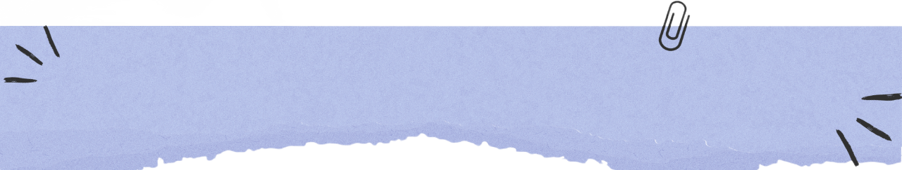

<div class="text-center">
  <div class="imgagen-container">
    
  </div>
  <div class="text-overlay">
    <div class="nombre" [class.dark-mode]="darkModeService.isDarkMode" href="#">Bienvenido {{ nombreUsuario }}</div>
    <div class="d-flex justify-content-between align-items-center">

      <i class='bx bx-bulb' [class.dark-mode]="darkModeService.isDarkMode" (click)="toggleDarkMode()"></i>
      
      <i class='bx bx-log-out' [ngbPopover]="content" popoverTitle="Cerrar Sesión" placement="top" triggers="mouseenter:mouseleave" [class.dark-mode]="darkModeService.isDarkMode" routerLink="/signin" (click)="authService.logOut()"></i>
      <ng-template #content>Hasta luego {{ nombreUsuario }}</ng-template>

    </div>
  </div>
</div>